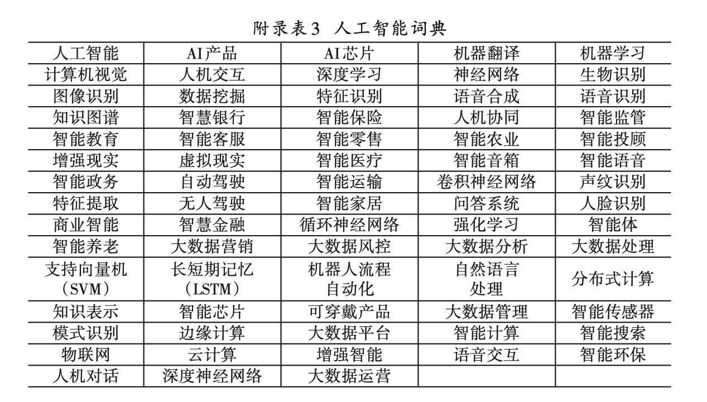
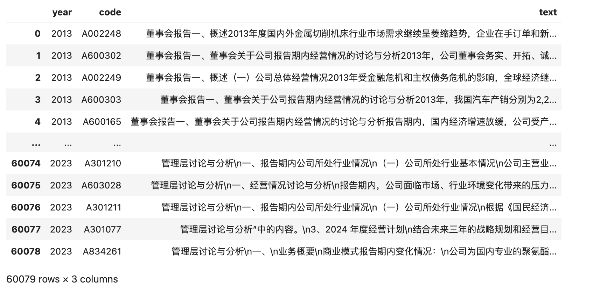
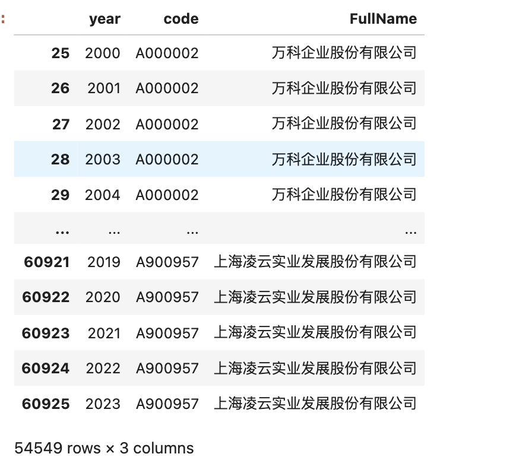
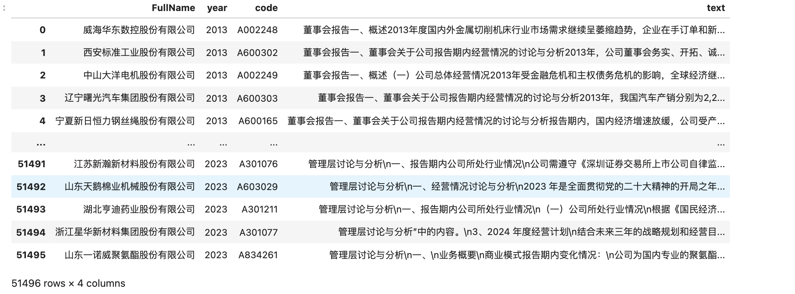
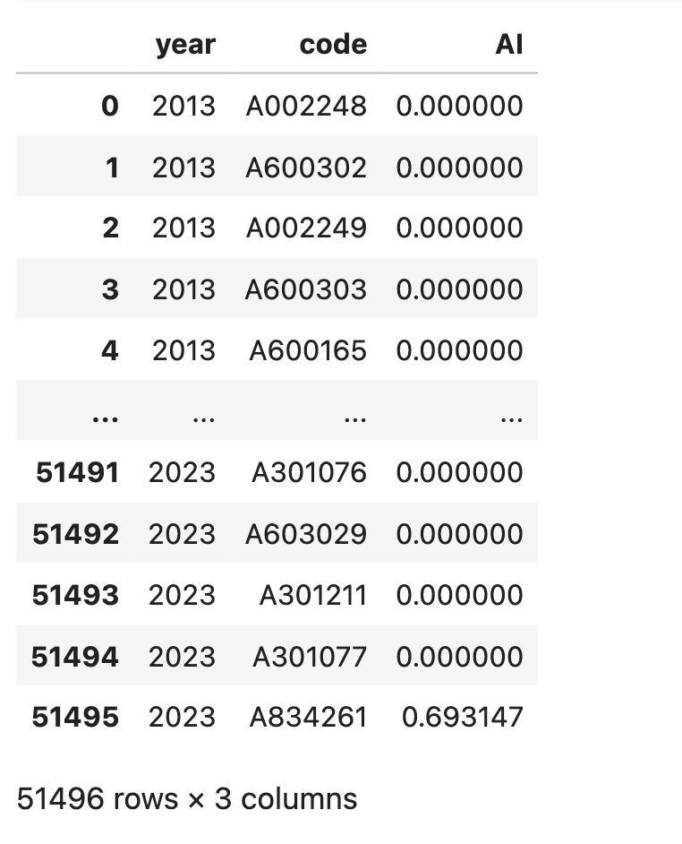

一、案例
1.1 文献
姚加权, 张锟澎, 郭李鹏, 冯绪. 人工智能如何提升企业生产效率？——基于劳动力技能结构调整的视角[J]. 管理世界, 2024, 40 (02): 101-116+133+117-122.
摘要:人工智能技术对实现经济的高质量发展具有重要意义。现有研究多聚焦于人工智能对宏观经济的影响，本文从企业层面考察了人工智能技术如何影响生产效率和劳动力技能结构。本文运用机器学习方法生成了「人工智能词典」，并对上市公司的年报和专利进行「文本分析」，进而构建了企业层面的「人工智能指标」。研究发现，人工智能显著提升了中国上市公司的生产率，并且该结论在一系列稳健性检验后依旧成立。在影响机制方面，人工智能通过促使企业减少常规低技能劳动力需求、增加非常规高技能劳动力需求的方式提升企业的生产率，这体现了企业劳动力技能结构的调整。异质性分析表明，产权性质、人才获得方式、劳动力保障、治理结构等企业层面因素对人工智能的生产率效应有较大影响。此外，企业所处的行业和地区层面因素也影响了人工智能的生产率效应。最后，本文发现人工智能提高了企业价值。本文加深了对微观企业层面人工智能在生产过程中所扮演角色的认知和理解，并为在微观企业层面推动人工智能技术发展提供了建议。
1.2 指标构建步骤
下图是论文中「人工智能指标」构建的流程图
我们将步骤分成三步
- Step1. 训练Word2Vec模型构建「人工智能AI词典」, 共54个词
- Step2. 统计上市公司 「年报」中AI词词频，采用自然对数处理得到指标Ln(m+1)
- Step3. 统计上市公司「MD&A」数据中AI词词频n，采用自然对数处理得到指标Ln(n+1)
- Step4. 根据上市公司申请专利的名称和摘要是否含AI词，统计上市公司AI专利申请数量p，采用自然对数处理得到指标Ln(p+1)
企业申请的人工智能专利代表企业已经拥有的人工智能技术，反映了企业人工智能技术的产出情况，能够与年报相互印证企业的人工智能技术水平
为了减轻阅读压力，也为了减轻制作本文的工作量， 本文仅实现 Step1 、Step2 、Step3， 覆盖截图中的红色框范围内的内容。
1.3 项目结构
- 管理世界2024企业人工智能文件夹
- 代码.ipynb #代码文件
- data #数据文件夹
- A01-22.csv.gz #年报
- mda01-22.csv.gz #md&a
- 上市公司基本信息2000-2022.csv #基本信息
- A股人工智能指标2001-2022(mda).xlsx #计算结果
- Word2Vec #模型文件夹
- mda01-22.200.6.bin
- mda01-22.200.6.bin.syn1neg.npy
- mda01-22.200.6.bin.wv.vectors.npy
- 1000w专利摘要文本.100.6.bin
- 1000w专利摘要文本.100.6.bin.syn1neg.npy
- 1000w专利摘要文本.100.6.bin.wv.vectors.npy
二、准备AI词典
- 构造专利摘要语料、管理层讨论与分析语料，分别训练Word2Vec模型
- 构建人工智能种子词， 使用Word2Vec模型扩展并构建「人工智能词典」
2.1 训练Word2Vec模型
刚好之前分享过使用cntext库(2.0以上版本)训练Word2Vec， 相关推文
分别对应 cntext-2.1.1-py3-none-any.whl、 mda01-22.200.6.bin 、 1000w专利摘要文本.100.6.bin 两个模型文件。文末有模型获取方式。
2.2 导入Word2Vec
以 mda01-22.200.6.bin 为例， 使用cntext2读取模型， cntext安装和使用请参考 文本分析库cntext2.x使用说明文档。 文末有cntext获取方式。
import cntext as ct
#查看cntext版本
print(ct.__version__)
#导入管理层讨论与分析的Word2Vec模型
mda_w2v_m = ct.load_w2v('Word2Vec/mda01-22.200.6.bin')
#导入专利摘要Word2Vec模型
#pat_w2v_m = ct.load_w2v('Word2Vec/1000w专利摘要文本.100.6.bin')
mda_w2v_m
Run
2.1.1
Loading word2vec model...
<gensim.models.word2vec.Word2Vec at 0x7dbf9afd0>
查看某个词的词向量
mda_w2v_m.wv.get_vector('人工智能')
Run
array([-3.8744571 , -0.5923845 , -1.8126943 , 1.660894 , 1.4194168 ,
1.0365077 , -0.21333796, -0.60481924, 1.5012817 , -0.24060927,
-1.7463511 , -2.1997519 , -0.66537315, -1.2665682 , 0.14333063,
-0.1268099 , 2.005481 , -1.4638793 , 3.7950375 , 0.20866613,
1.0281029 , -1.5495429 , -0.2518896 , 1.4159175 , 3.178865 ,
.............................#省略展示..........................
-1.2206184 , 1.6766415 , -0.1082068 , 0.62580353, 1.4639648 ,
2.2743094 , -0.48386717, 1.3510187 , 1.1698194 , 0.72390413,
-0.4855997 , 1.0688399 , 0.77217335, -1.4559731 , 1.4391305 ,
0.8412411 , 2.359447 , -1.1504242 , 1.3677332 , -0.92123735,
1.281644 , 0.67157453, 2.159804 , 1.7593136 , -0.53061306,
-0.77395666, 0.5912517 , 1.9448034 , 0.13023153, 0.6798518 ],
dtype=float32)
2.3 扩展词典
我们每个人对人工智能都有所了解，脑海里首先能想到的词可以当做 「初始种子词」， 例如词语 人工智能|人机对话| 等。 本部分主要展示Word2Vec模型的近义词联想能力，
mda_w2v_m.wv.most_similar(['人工智能', '人机对话'], topn=100)
Run
[('自然语言处理', 0.8055953979492188),
('AI', 0.8050345778465271),
('语音识别', 0.804234504699707),
('NLP', 0.7967724800109863),
('交互技术', 0.7902386784553528),
('智能语音', 0.7870553731918335),
..........#省略展示..........
('智能识别', 0.6703209280967712),
('结合人工智能', 0.6701650619506836),
('VR技术', 0.6699633002281189),
('人工智能芯片', 0.6690542101860046),
('人工智能数据分析', 0.6689168214797974),
('AR技术', 0.6688560843467712)]
之后Word2Vec可以根据初始种子词进行扩充，再经过人工检查，最终构建「人工智能词典」(论文附表3截图), 我将其整理为 AI-Words

AI_Words = '机器翻译|机器学习|计算机视觉|人机交互|深度学习|神经网络|生物识别|数据挖掘|特征识别|语音合成|语音识别|知识图谱|智慧银行|智能保险|人机协同|智能监管|智能教育|智能客服|智能零售|智能农业|智能投顾|增强现实|虚拟现实|智能医疗|智能语音|智能政务|自动驾驶|智能运输|卷积神经网络|声纹识别|特征提取|无人驾驶|人脸识别|商业智能|循环神经网络|大数据营销|大数据分析|大数据处理|支持向量机|长短期记忆|机器人流程|自然语言|分布式计算|可穿戴产品|大数据管理|智能传感器|模式识别|边缘计算|大数据平台|语音交互|智能环保|人机对话|深度神经网络|大数据运营'
AI_Words
三、准备数据
为了保证数据质量， 论文对样本进行的操作
1. 剔除金融行业公司；
2. 剔除信息传输、软件和信息技术 服务业以及科学研究和技术服务行业，原因在于这些行业天生使用云计算、大数据以及人工智能技术并披露 相关信息，可能无法清楚判断这些企业应用人工智能技术对其生产效率的影响；
3. 剔除当年处于 ST 和*ST 状 态的样本；
4. 剔除数据缺失的样本
大邓这里有几个数据文件，经过一些操作(字段名统一、 整理会计年度、合并多源数据)，就能实现论文中的样本操作。文末有数据获取方式 。
| 数据 | 文件名 | 所含字段 |
|---|---|---|
| 2001-2022年A股上市公司年报 | A01-22.csv.gz | 仅含code 、 year 、 text 三个字段 |
| 2001-2022年A股上市公司管理层讨论与分析 | mda01-22.csv.gz | 仅含code 、 year 、 text 三个字段 |
| 2000-2022年A股上市公司基本信息 | 上市公司基本信息2000-2022.csv | 含Symbol、FullName、ShortName、IndustryName、EndDate等 39 个字段。 |
字段含义
[年报、管理层讨论与分析数据]
- year 会计年度
- text 年报文本 或 管理层讨论与分析文本
- code 股票代码
[A股基本信息]
- Symbol 股票代码
- ShortName 股票简称， 一般ST字符会出现在这里
- FullName 中文全称
- EndDate 统计截止日期
3.1 读取数据
import pandas as pd
#读取数据
mda_df = pd.read_csv('data/mda01-22.csv.gz', compression='gzip')
#将year更改为字符串格式
mda_df['year'] = mda_df['year'].astype(str)
mda_df

2000-2022年A股上市公司基本信息 含 行业信息、公司简称里ST等信息， 可以按条件筛选记录。同时，也要构造出 year、code字段，方便后续与mda_df 交集并表。
ind_df = pd.read_csv('data/上市公司基本信息2000-2022.csv')
ind_df = ind_df[ind_df['Symbol']!='股票代码']
ind_df
3.2 筛选样本
为了保证数据质量， 论文对样本进行的操作
1. 剔除金融行业公司；
2. 剔除信息传输、软件和信息技术 服务业以及科学研究和技术服务行业，原因在于这些行业天生使用云计算、大数据以及人工智能技术并披露 相关信息，可能无法清楚判断这些企业应用人工智能技术对其生产效率的影响；
3. 剔除当年处于 ST 和 ``*ST`` 状态的样本；
4. 剔除数据缺失的样本
筛选记录的代码
#mask1筛选出金融、信息、科学研究、技术服务等上市公司
mask1 = ind_df.IndustryName.str.contains('金融|信息|科学研究|技术服务')
#mask2筛选出ST和*ST的企业。
mask2 = ind_df.ShortName.str.contains('ST')
#剔除掉符合mask1和mask2条件的企业
ind_df = ind_df[(-mask1) & (-mask2)]
#将ind_df中年份、股票代码相关字段改名为【year】【code】，方便与 mda_df并表
ind_df.rename(columns={'Symbol': 'code'}, inplace=True)
ind_df['year'] = ind_df.EndDate.apply(lambda date: date[:4])
ind_df = ind_df[['year', 'code', 'FullName']]
ind_df

以 交集(inner) 方式合并 mda_df 和 ind_df， 相当于剔除了mda数据中金融、信息、科学研究、技术服务、ST、*ST 公司
mda_df2 = pd.merge(mda_df, ind_df, on=['code', 'year'], how='inner')
mda_df2 = mda_df2[['FullName', 'year', 'code', 'text']]
mda_df2

四、测量AI指标
测量人工智能指标代码比较简单，
- 选中 text字段, 利用字符串属性 .str.count() 测量 AI-Words 出现次数，
- np.log 自然对数处理
- 选择必要的字段year、code、AI 进行保存和展示
import numpy as np
#测量企业人工智能指数
#计算结果保存为字段AI
mda_df2['AI'] = np.log(mda_df2['text'].str.count(AI_Words) + 1)
mda_df3 = mda_df2[['year', 'code', 'AI']]
#保存为csv/xlsx
mda_df3.to_csv('A股人工智能指标2001-2022(mda).csv', index=False)
mda_df3.to_excel('A股人工智能指标2001-2022(mda).xlsx', index=False)
#展示结果
mda_df3

五、获取资料
5.1 免费说明
阅读是免费的， 推文内的相关模型、安装包、数据是付费获取。
今日推文最核心的python代码只有2行， 看到就赚到！今日推文要计算「企业人工智能指数」，
#AI相关词
AI_Words = '机器翻译|机器学习|计算机视觉|人机交互|深度学习|神经网络|生物识别|数据挖掘|特征识别|语音合成|语音识别|知识图谱|智慧银行|智能保险|人机协同|智能监管|智能教育|智能客服|智能零售|智能农业|智能投顾|增强现实|虚拟现实|智能医疗|智能语音|智能政务|自动驾驶|智能运输|卷积神经网络|声纹识别|特征提取|无人驾驶|人脸识别|商业智能|循环神经网络|大数据营销|大数据分析|大数据处理|支持向量机|长短期记忆|机器人流程|自然语言|分布式计算|可穿戴产品|大数据管理|智能传感器|模式识别|边缘计算|大数据平台|语音交互|智能环保|人机对话|深度神经网络|大数据运营'
#企业人工智能指数，保存为字段AI
mda_df2['AI'] = np.log(mda_df2['text'].str.count(AI_Words) + 1)
5.2 付费说明
内容整理不易， 想尽快复现本文的同学可以购买对应的数据、安装包、Word2Vec模型。加 WeChat: 372335839 ， 备注 「姓名-学校-专业」。
- 打包价300元, 资料含
1. 专利摘要Word2Vec模型文件(1000w专利摘要文本.100.6.bin)
2. 管理层讨论与分析Word2Vec模型文件(mda01-22.200.6.bin)
3. cntext2安装文件(cntext-2.1.1-py3-none-any.whl)
4. 管理层讨论与分析(mda01-22.csv.gz)、年报(A01-22.csv.gz)
5. 上市公司基本信息2000-2022.csv
6. A股人工智能指标2001-2022(mda).xlsx
- 零卖价格明细
- 100元 cntext2安装文件(cntext-2.1.1-py3-none-any.whl)
- 100元 管理层讨论与分析(mda01-22.csv.gz)、年报(A01-22.csv.gz)
- 100元 管理层讨论与分析Word2Vec模型文件(mda01-22.200.6.bin)
- 100元 专利摘要Word2Vec模型文件(1000w专利摘要文本.100.6.bin)
- 50元 上市公司基本信息2000-2022.csv
- 50元 A股人工智能指标2001-2022(mda).xlsx
项目结构
- 管理世界2024企业人工智能文件夹
- 代码.ipynb #代码文件
- data #数据文件夹
- A01-22.csv.gz #年报
- mda01-22.csv.gz #md&a
- 上市公司基本信息2000-2022.csv #基本信息
- A股人工智能指标2001-2022(mda).xlsx #计算结果
- Word2Vec #模型文件夹
- mda01-22.200.6.bin
- mda01-22.200.6.bin.syn1neg.npy
- mda01-22.200.6.bin.wv.vectors.npy
- 1000w专利摘要文本.100.6.bin
- 1000w专利摘要文本.100.6.bin.syn1neg.npy
- 1000w专利摘要文本.100.6.bin.wv.vectors.npy
相关内容请阅读